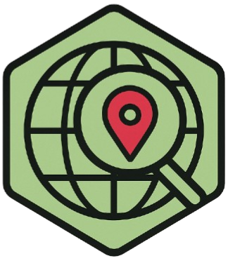

ZZX-LABS R&D // SOFTWARE
GeoAdd
GeoAdd is a geo-addressing system providing reversible shortcodes with increasing precision, supporting OSM overlays and spatial APIs for Python-based geospatial workflows.
GEOSPATIAL // REVERSIBLE SHORTCODES
GeoAdd Encoder
ENCODEDECODEPRECISIONOSM LINK
| Chars | Code | Lat span | Lon span |
|---|
CSV format: name,lat,lon